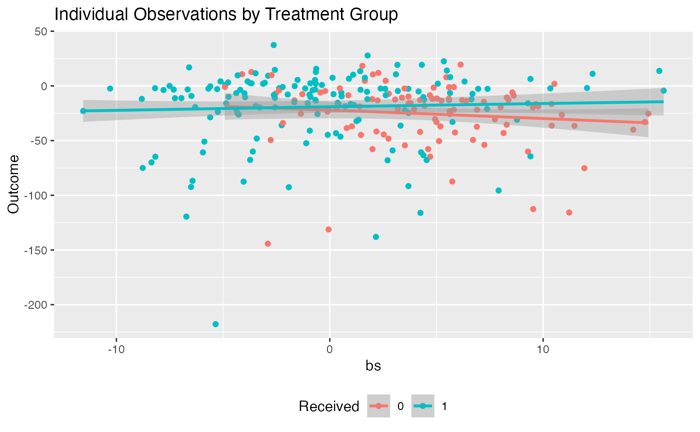
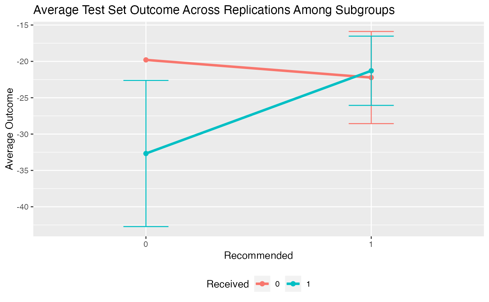

Plotting results for fitted subgroup identification models
Plots results for estimated subgroup treatment effects
Plots validation results for estimated subgroup treatment effects
# S3 method for subgroup_fitted plot(x, type = c("boxplot", "density", "interaction"), avg.line = TRUE, ...) # S3 method for subgroup_validated plot(x, type = c("boxplot", "density", "interaction"), avg.line = TRUE, ...)
Arguments
| x | fitted object returned by |
|---|---|
| type | type of plot. |
| avg.line | boolean value of whether or not to plot a line for the average
value in addition to the density (only valid for |
| ... | not used |
See also
fit.subgroup for function which fits subgroup identification models.
validate.subgroup for function which creates validation results
and fit.subgroup for function which fits subgroup identification models.
Examples
library(personalized) set.seed(123) n.obs <- 1000 n.vars <- 20 x <- matrix(rnorm(n.obs * n.vars, sd = 3), n.obs, n.vars) # simulate non-randomized treatment xbetat <- 0.5 + 0.5 * x[,11] - 0.5 * x[,13] trt.prob <- exp(xbetat) / (1 + exp(xbetat)) trt01 <- rbinom(n.obs, 1, prob = trt.prob) trt <- 2 * trt01 - 1 # simulate response delta <- 2 * (0.5 + x[,2] - x[,3] - x[,11] + x[,1] * x[,12]) xbeta <- x[,1] + x[,11] - 2 * x[,12]^2 + x[,13] xbeta <- xbeta + delta * trt # continuous outcomes y <- drop(xbeta) + rnorm(n.obs, sd = 2) # create function for fitting propensity score model prop.func <- function(x, trt) { # fit propensity score model propens.model <- cv.glmnet(y = trt, x = x, family = "binomial") pi.x <- predict(propens.model, s = "lambda.min", newx = x, type = "response")[,1] pi.x } subgrp.model <- fit.subgroup(x = x, y = y, trt = trt01, propensity.func = prop.func, loss = "sq_loss_lasso", nfolds = 5) # option for cv.glmnet subgrp.model$subgroup.trt.effects#> $subgroup.effects #> Trt Effect Among Recommended Trt Ctrl Effect Among Recommended Ctrl #> 13.98552 18.45793 #> #> $avg.outcomes #> Recommended Trt Recommended Ctrl #> Received Trt -11.77302 -25.884954 #> Received Ctrl -25.75854 -7.427022 #> #> $sample.sizes #> Recommended Trt Recommended Ctrl #> Received Trt 221 366 #> Received Ctrl 242 171 #>plot(subgrp.model)plot(subgrp.model, type = "boxplot")plot(subgrp.model, type = "interaction")valmod <- validate.subgroup(subgrp.model, B = 5, method = "training_test", train.fraction = 0.75) valmod$avg.results#> $subgroup.effects #> Trt Effect Among Recommended Trt Ctrl Effect Among Recommended Ctrl #> 11.60910 17.76595 #> #> $avg.outcomes #> Recommended Trt Recommended Ctrl #> Received Trt -12.40451 -25.572851 #> Received Ctrl -24.01362 -7.806903 #> #> $sample.sizes #> Recommended Trt Recommended Ctrl #> Received Trt 62.2 89.2 #> Received Ctrl 58.8 39.8 #>plot(valmod)plot(valmod, type = "boxplot")plot(valmod, type = "interaction")